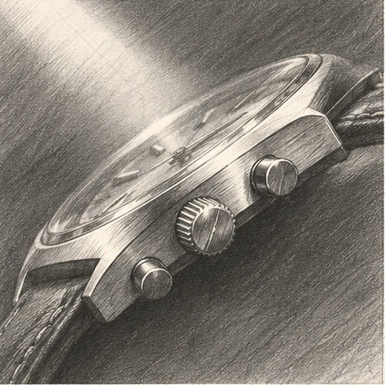
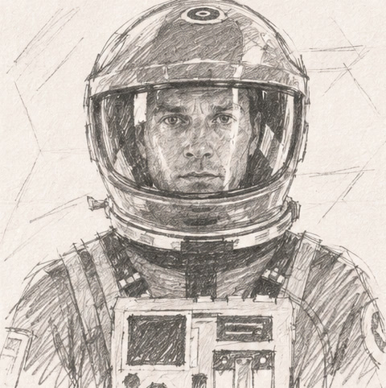
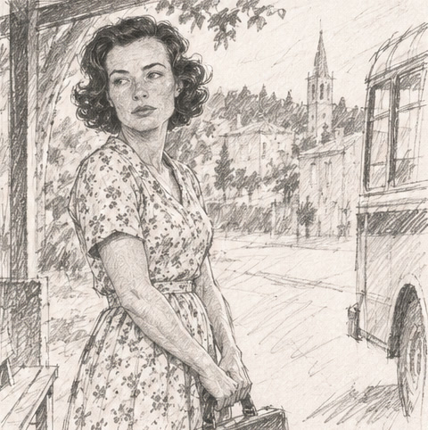
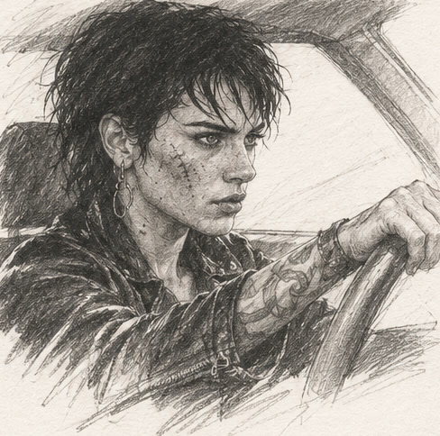
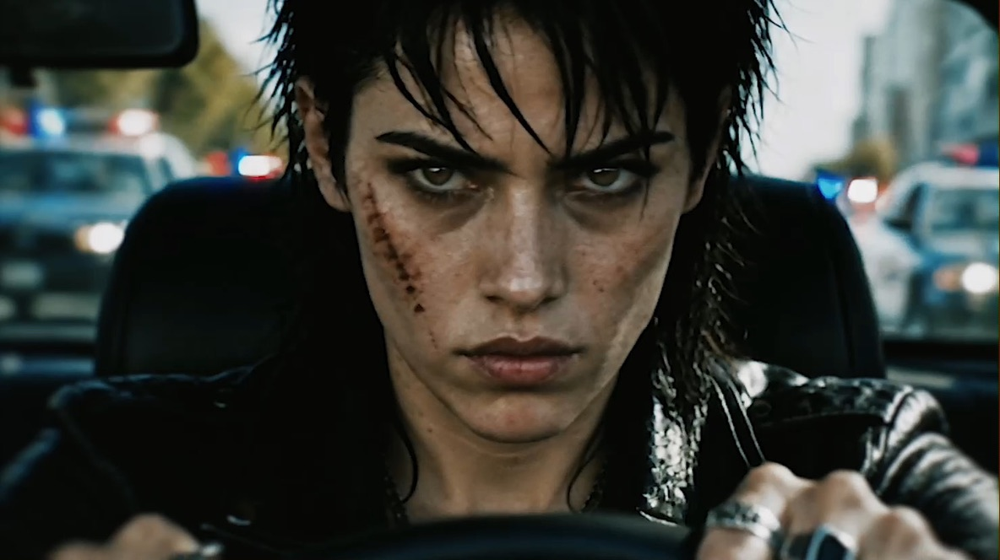
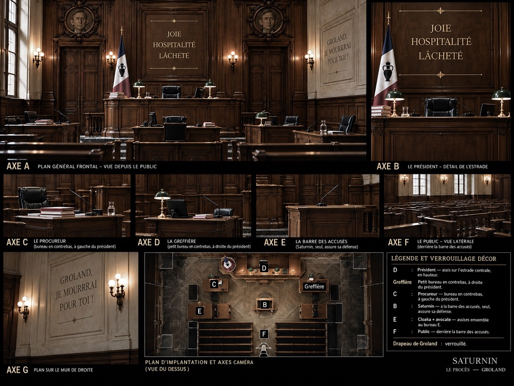
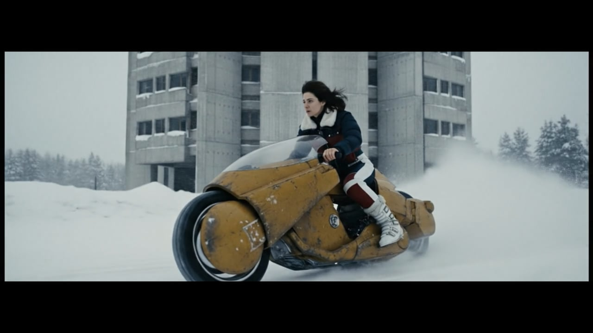
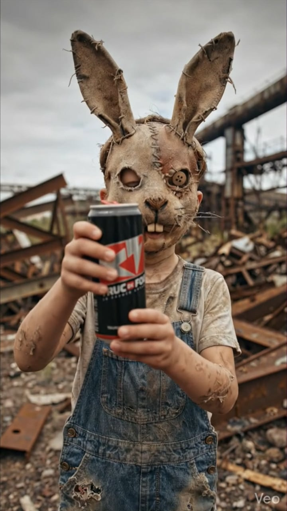

Reel
Bande démo · Réalisation16:9

Une minute de réalisation, de direction artistique et de création en IA générative : publicité, fiction et recherche visuelle.
Fiche du filmRéalisateur / Artiste IA
SommaireBande démo · Réalisation16:9
Une minute de réalisation, de direction artistique et de création en IA générative : publicité, fiction et recherche visuelle.
Fiche du filmFiction · IA générative16:9


Un face-à-face dans un décor de western, où les regards, la tension et les mouvements du combat construisent la scène.
Fiche du filmClip · Création personnelle16:9


Un film musical qui interroge, avec ironie, le rapport entre intelligence artificielle, authenticité et émotion humaine.
Fiche du filmSpec film · Publicité · IA générative16:9


Un film publicitaire indépendant autour de l’horlogerie, qui met en valeur la montre, ses matières et sa lumière.
Fiche du filmCréation · IA générative16:9



Un même mouvement traverse différents personnages, époques et univers. Une recherche sur la continuité du geste et le montage.
Fiche du filmBande-annonce · Fiction16:9



Une bande-annonce qui s’appuie sur les visages, les regards et les atmosphères pour installer un univers de fiction.
Fiche du filmFiction · IA générative16:9


Une séquence d’action urbaine, avec une voiture propulsée au-dessus de la ville. Un travail sur le mouvement, l’espace et le cadrage.
Fiche du filmFilm publicitaire · Boisson · IA générative16:9


Une boisson transposée dans un univers lunaire : un rover, un astronaute et une canette au cœur de la mise en scène.
Fiche du filmFilm publicitaire · IA générative16:9
Un film publicitaire qui inscrit ses personnages dans un cadre du quotidien, avec une attention portée à la justesse des attitudes et du décor.
Fiche du filmSketch · Groland · Canal+16:9


Un sketch d’environ trois minutes entièrement réalisé en IA générative pour Groland, autour d’un procès et de ses personnages.
Fiche du filmSketch · Groland · Canal+16:9

Un sketch qui place un personnage de mamie au centre d’une situation comique, dans l’univers de Groland.
Fiche du filmExpérimentation · Science-fiction · IA générative16:9

Lire

Une recherche visuelle de science-fiction autour d’une moto futuriste et d’un paysage urbain enneigé.
Fiche du filmFilm publicitaire · Boisson · IA générative9:16

Lire
Un film publicitaire en format vertical, dans un univers industriel peuplé de personnages masqués, autour de la boisson Truc de Fou.
Fiche du filmFilm · Direction artistique · IA générative9:16

Un univers visuel où l’imaginaire japonais, les cerisiers en fleurs et le longboard se rencontrent.
Fiche du filmSpec film · Publicité · IA générative9:16

Une proposition publicitaire indépendante, en format vertical, qui associe des personnages masqués à un univers industriel.
Fiche du filmSketch · Groland · Canal+9:16
Un sketch de Groland autour de Cannes, qui joue avec les codes du glamour et une figure de mamie décalée.
Fiche du filmSketch · Groland · Canal+9:16
Deux papys jouent aux cartes dans un univers sous-marin : une situation familière déplacée dans un décor impossible.
Fiche du filmLes recherches retenues et les planches de FALLEN.
Consulter les carnetsUn projet, une idée, une rencontre.
Contact